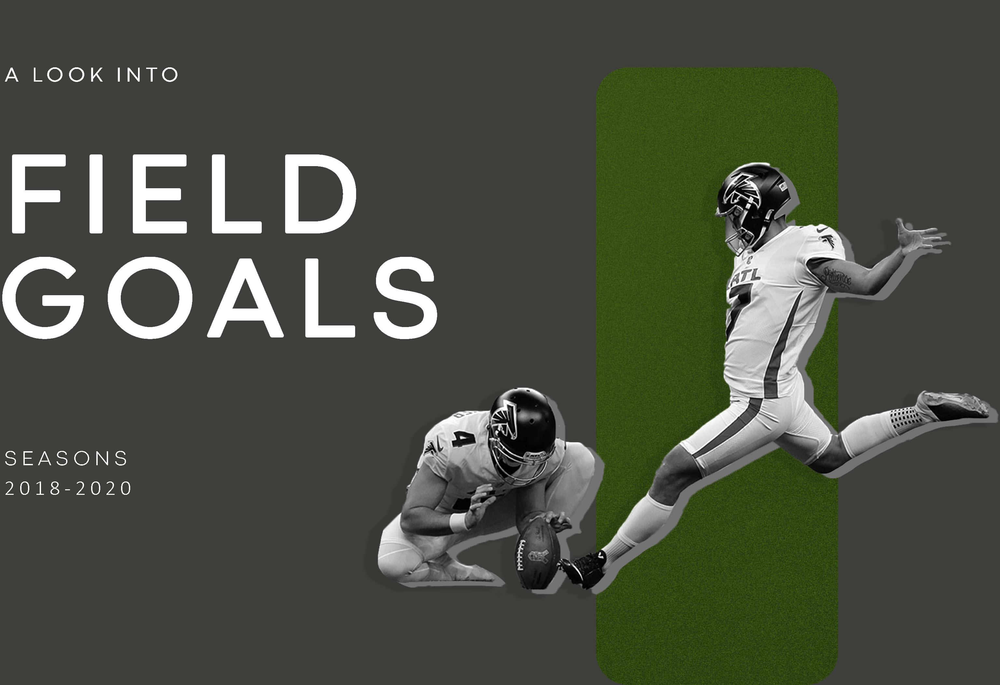
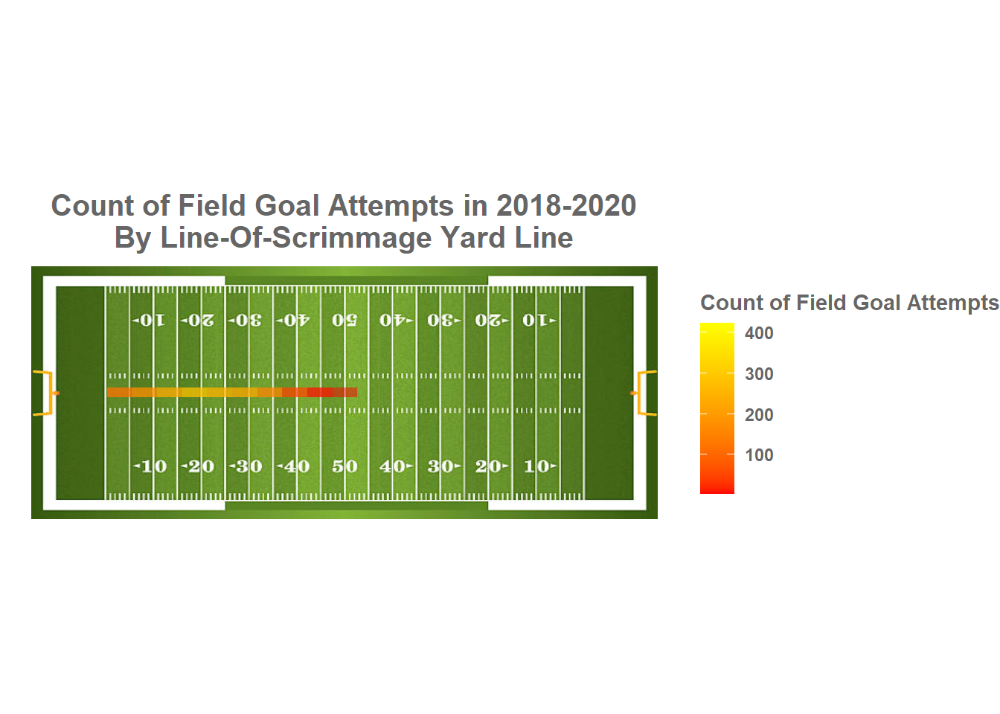
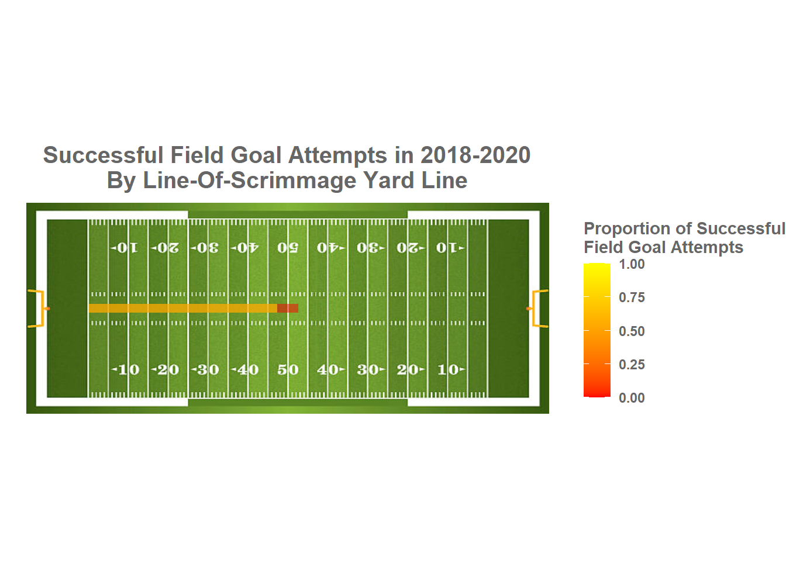
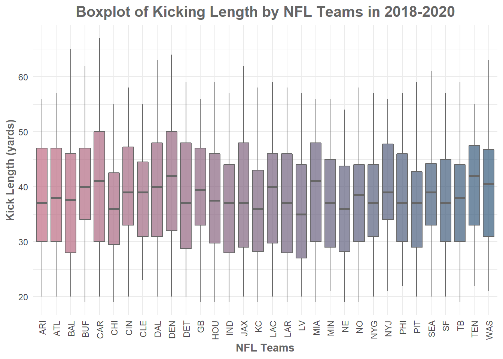
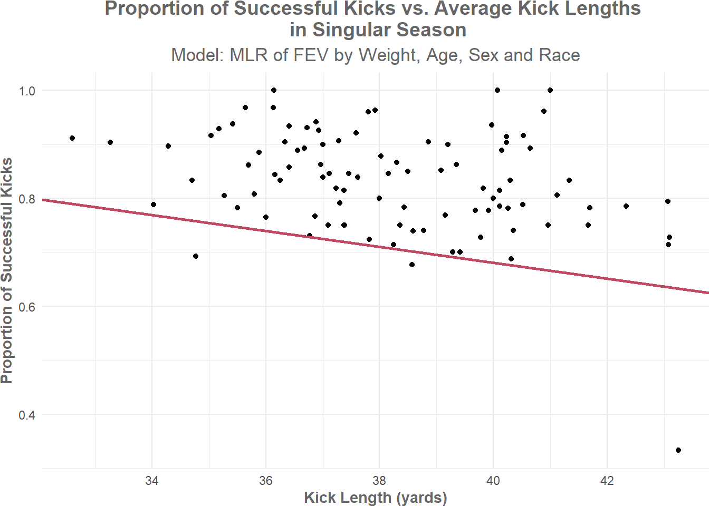
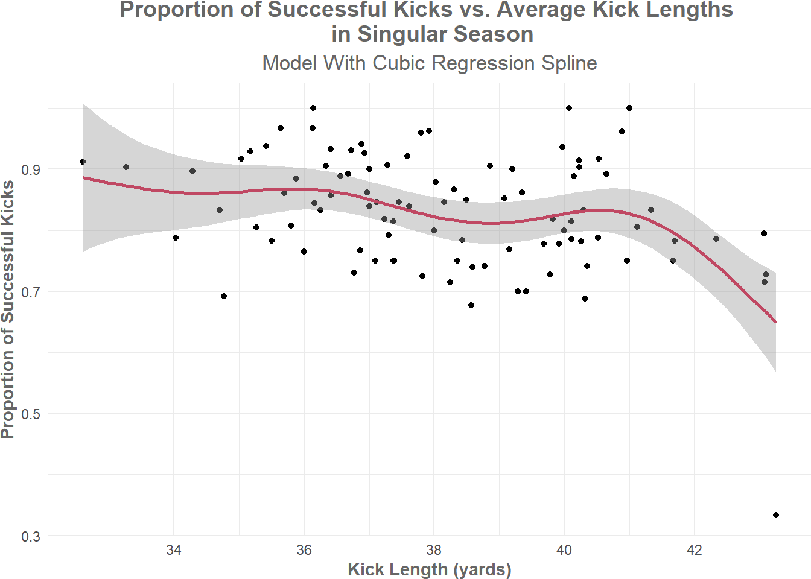
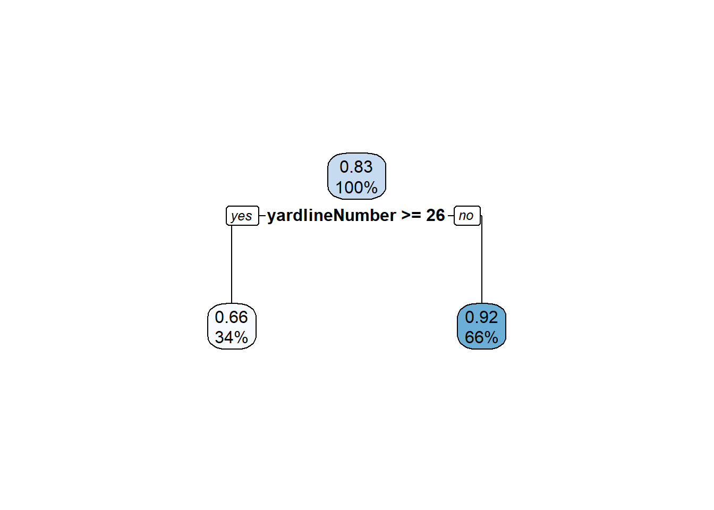
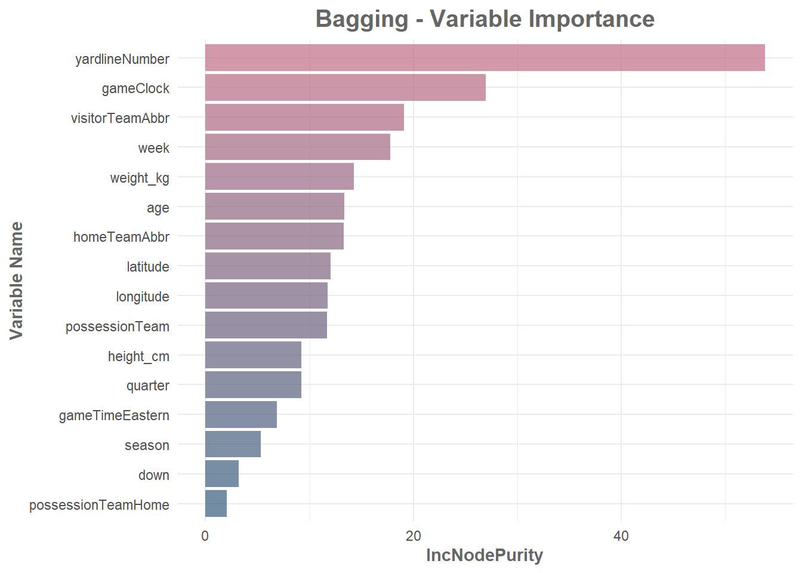

In American football, two teams play to advance the football to the opposing side’s end zone. Throughout the game, football coaches are heavily involved in calling plays and directing their players through the field.
Arguably the most reliable method of scoring points in football is by kicking the ball through the crossbar. This is the job of a kicker- whose only role in the game is to kick. Unlike many other positions- such as wide receivers, where virtually every moment on the field is different- a kicker’s game is one and the same. Because of that, kicks are typically seen as “safe” methods to score and teams rely on kickers to consistently make their shot. While kicking accounts for roughly a third of all NFL scores, because it’s not considered as flashy in nature as other football plays, kicking is an immensely underappreciated aspect of the sport.
In this report, we will examine the factors that contribute to a field goal kick. The question we are interested in exploring is: what variables should football coaches focus on in determining whether a field goal kick would be successful? In particular, what variables are associated with the kicking length of a field goal and what is the relationship between kicking length and kicking attempt outcome?
This project aims to help football coaches assess whether a field goal kick would be successful at a certain game moment to help determine their next game move.
Before we dive into the analysis, we need to go over common football terminologies:
A field goal kick is considered ‘good’ or ‘successful’ if it managed to score 3 points- that is, the kick went through the goal post.
The ‘starting yard line’ or line-of-scrimmage is the line at which a play begins and the line at which the football is set for that play.
The dataset we’re working with details all special team plays (that is, plays that involve punts, kickoffs, field goals and extra points) in all National Football League (NFL) games from 2018 to 2020. This dataset was provided by the NFL as a part of their 2022 data competition, Big Data Bowl: https://www.kaggle.com/c/nfl-big-data-bowl-2022/overview
We also refer to this dataset for the locations of NFL teams’ home stadiums: https://github.com/Sinbad311/CloudProject/blob/master/NFL%20Stadium%20Latitude%20and%20Longtitude.csv
Additionally, we use this dataset for the abbreviations of NFl teams: https://gist.github.com/cnizzardini/13d0a072adb35a0d5817
We’ll use dplyr to help merge all datasets and create new variables. Additionally, we’ll use ggplot to create all static plots, plotly for all interactive plots and leaflet for the map. We’ll also use broom to tidy all raw outputs and to format all tables with kable. For loading in the image and coordinating the points of the football field plots, we’ll use jpeg and grid.
First, we merge the data of team abbreviations with team locations (longittude and lattitude) by teams. Note that there were NFL teams that changed their name throughout the years- such as the Washington Football Team who also went by the Washington Redskins. Hence, these names need to be modified to match for the datasets to be properly merged. Moreover, there were teams that recently moved to a different location (e.g. Las Vegas Raiders) and thus, we need to update their location to match their current state. We’ll use external sources to check the new location of the team and input in this new value.
We then merge this dataset of team abbreviations and locations with the games data set by home team abbreviation to get the location of where each game was played. Once again, we have to fix team naming conventions so that they match up in order to merge the datasets. Next, we merge this new dataset with the game plays dataset by gameId. This gives us the game information and location of each game play. Again, we have to fix team naming conventions so that they match up in order to merge the datasets. Note that in this analysis, we want to only examine field goals, so we’ll filter for plays that are ‘Field Goal’.
Additionally, we merge this new dataset of field goal plays with a dataset of players by kickerId to get more information on the athlete who kicked the ball in each game play. However, before the merge, we need to standardize entries in the players dataset. Since the entries of height for this dataset are partially recorded in just inches and partially recorded in both feet and inches, we convert all entries of height to cm. We also convert all entries of weight to kg. Next, we convert all birth dates to Date objects. For this variable, some entries have the year listed first and some have the year listed last. To standardize, we match date entries by regex to get the date formate in order to convert them to Dates. For example, the regex “-[0-9]{4}$” checks that the year is formatted first and hence, we are able to create our Date object approporiately.
Now, we select the variables relevant to our question of interest: season, week, gameDate, gameTimeEastern, longitude, latitude, homeTeamAbbr, visitorTeamAbbr, quarter, down, specialTeamsPlayType, specialTeamsResult, possessionTeam, yardlineNumber, gameClock, kickLength, kickerId, height_cm, weight_kg, birthDate, displayName, collegeName, Position.
With that, we created the following variables of interest:
birthYear: The year that the player kicking the ball was born
age: The age of the player at the time of kick
specialTeamsSuccess: Whether or not the kick attempt was classified as “good”
possessionTeamHome: Whether or not the team in posession of the ball is the home team
We first take a look at all the variables of the final dataset that we are working with, their types, whether they are numerical or categorical and the number of missing entires they have.
| Column | Type | Numerical or Categorical | Number of NAs |
|---|---|---|---|
| season | double | numerical | 0 |
| week | double | numerical | 0 |
| gameDate | character | numerical | 0 |
| gameTimeEastern | double | numerical | 0 |
| longitude | double | numerical | 0 |
| latitude | double | numerical | 0 |
| homeTeamAbbr | character | categorical | 0 |
| visitorTeamAbbr | character | categorical | 0 |
| quarter | double | numerical | 0 |
| down | double | numerical | 0 |
| specialTeamsPlayType | character | categorical | 0 |
| specialTeamsResult | character | categorical | 0 |
| possessionTeam | character | categorical | 0 |
| yardlineNumber | double | numerical | 0 |
| gameClock | double | numerical | 0 |
| kickLength | double | numerical | 51 |
| kickerId | double | numerical | 14 |
| height_cm | double | numerical | 14 |
| weight_kg | double | numerical | 14 |
| birthDate | double | numerical | 15 |
| displayName | character | categorical | 14 |
| collegeName | character | categorical | 15 |
| Position | character | categorical | 14 |
| birthYear | double | categorical | 15 |
| age | double | numerical | 15 |
| specialTeamsSuccess | logical | categorical | 0 |
| possessionTeamHome | logical | categorical | 0 |
After that, we impute missing values for relevant variables. Note that we use the mean for numerical values and the median for categorical values.
The dataset is now ready to be explored.
First, we visualise kicking locations by viewing a plot of the line-of-scrimmage of field goal attempts. From the plot we see that most attempts were roughly from the 20 yard line. Additionally, we also discover that the number of field goal attempts significantly dropped at around the 40 yard line and further.

Next, we take a look at the proportion of successful kicks at various line-of-scrimmage yard lines. We see that the success proportion was quite consistent for attempts at roughly the 47 yard line and under. However for field goal attempts over 47 yards, the success dropped significantly. Most kicks at these yard lines were unsuccessful.

We then take an overview of each team’s field goal success rate by the starting yard line. From the plot, we can see that the furthest successful kick attempts in 2018-2020 were between the 45-50 yard line and completed by the Dallas Cowboys (DAL) and the Carolina Panthers (CAR). Additionally, while most teams that attempted close field goal kicks (between the 0 to 5 yard line) scored 100% of their attempts, the Miami Dolphins (MIA) and Philadelphia Eagles (PHI) were less successful. The teams with the shortest max yard line successful kicks were the Minesota Vikings (MIN) and the New England Patriots (NE). Both teams’s furthest successful kick were between the 30-35 yard line.
From this, we investigate the field goal performance of each team by average starting yard line in a season. In this plot, each dot size corresponds to the number of field goal attempts made by each team in a season. Notice that the most season field goal success rates were above 65%. Moreover, we see that the Tennessee Titans (TEN) were significantly less successful in the 2019 season compared to all others NFL teams in all season between 2018 to 2020. In 2019, their success rate was only 33.33% with 15 attempts. From external knowledge, the Tennessee Titan’s main kicker was injured at this time and hence, was unable to play- leading the team to go through four different kickers with evidently little success. The best seasons for any team in terms of proportion of successful field goal attempts had 100% success rate. These seasons are: 2020 Pittsburgh Steelers (PIT)- average yard line of 18.1 with 21 attempts, 2020 Green Bay Packers (GB)- average yard line of 22 with 15 attempts, and 2020 Seattle Seahawks (SEA)- average yard line of 22.9 with 20 attempts.
Taking a look at the summary table for kick length by special teams results, we can see that the mean of a “no good” kick or an unsuccessful kick (46.52 yards) was higher than that of a “good” kick or a successful kick (36.70). Moreover, the overall minimum kicking length was 19 yards and it was a successful kick; while the overall maximum kicking length attempt was 67 yards and was unsuccessful. We also note that there was only 1 downed kick and 1 out of bounds kick in all of the 2018-2020 seasons.
| Special Teams Result | Min | Max | Mean | Standard Deviation | Range |
|---|---|---|---|---|---|
| Blocked Kick Attempt | 33.27 | 43.25 | 38.57 | 2.79 | 9.98 |
| Downed | 26.00 | 26.00 | 26.00 | NA | 0.00 |
| Kick Attempt Good | 19.00 | 63.00 | 36.70 | 9.75 | 44.00 |
| Kick Attempt No Good | 22.00 | 67.00 | 46.52 | 7.60 | 45.00 |
| Non-Special Teams Result | 32.61 | 43.25 | 38.02 | 2.74 | 10.64 |
| Out of Bounds | 26.00 | 26.00 | 26.00 | NA | 0.00 |
Next, we explore the kicking length by NFL teams in the 2018-2020 season. From the boxplot, the Denver Broncos (DEN) and Tennessee Titans (TEN) had the highest average kicking lengths at roughly 42 yards. The team with the lowest average kick length was the Las Vegas Raiders (LV) at roughly 35 yards.

Moving on, we further examine the kick length of successful and unsuccessful field goal attempts for every team. We see that the median kicking length of every team is higher for successful kicks than for unsuccessful kicks. Of the successful kicks, the Denver Broncos (DEN) has the highest kick length median at roughly 40 yards. The lowest median for successful kicks belongs to the Las Vegas Raiders (LV) at 33 yards.
Next, we visualize the teams and their home stadiums on a map.
From examing the locations of the various team stadiums, we are interested in determining whether there is a change in average kick distance between plays in stadiums of high and low altitudes. In theory, high altitudes allows for better football performance since air pressure is lower and hence, the ball moves faster and straighter.
We use external resources to find the top 3 teams with stadiums at the highest and lowest altitudes:
Highest altitudes: Denver Broncos (DEN), Arizona Cardinals (ARI), Atlanta Falcons (ATL)
Lowest altitdues: New Orleans Saints (NO), New York Giants (NYG), New York Jets (NYJ)
Then, we’ll filter for two groups: one with kicks from the top 3 highest altitude stadiums and one with kicks from the top 3 lowest altitude stadiums. Using a Mann–Whitney U test (otherwise known as a Wilcoxon 2-sample t-test), we check if there was a significant difference in kick lengths between these two independent groups.
| Statistic | P-Value | Method | Alternative |
|---|---|---|---|
| 270 | 0.10 | Wilcoxon rank sum test with continuity correction | Two sided |
With a p-value of 0.10, there is very weak evidence supporting the alternative hypothesis that there is a significant difference in kick lengths between kicks in high altitude stadiums and kicks in low altitude stadiums.
On top of that, we are also interested in whether teams performed better in terms of field goal success when they play home games vs. away games. For home games, players would have familarity with the field- seeing as that is where they usually practice. Additionally, morale would be higher at home games since they would have their home crowd cheering for them. This may help to boost their performance and hence, increase their success with field goals.
We’ll use a Wilcoxon signed-rank test to see if there was a significance difference in proportions of successful kicks for teams when playing home games vs. away games.
| Statistic | P-Value | Method | Alternative |
|---|---|---|---|
| 222 | 0.44 | Wilcoxon signed rank exact test | Two sided |
With a large p-value of 0.44, we cannot reject the null hypothesis that there was no significant difference in proportion of successful kicks between home games and away games. This result is not too surprising seeing that the most important characteristic that NFL teams look for when signing their kicker is consistency. Teams want kickers who they can count on to score regardless of whether they are playing home games or an away games since field goals are considered a “safe” method of scoring.
To begin, we group our data of game plays by posessionTeam (the team that is kicking the ball) and season. In the process, we summarise to find: the proportion of successful kick attempts (success_prop), the average height of the kicker (avg_height), the average weight of the kicker (avg_weight), the average age at time of kick of the kicker (avg_age), the proportion of these kicks that were done during a home game (home_prop), the average kick length in yards (avg_kickLength).
To evaluate the relationship between kick length and successful kicking attempts and to explore the association of other factors in a successful kick, we’ll fit 2 models to this grouped data. The first model is a multiple linear regression (MLR) model for success_prop with predictors: avg_height, avg_weight, avg_age, home_prop and avg_kickLength. The second model uses cubic regression spline and only takes into account avg_kickLength.
From the summary, the p-value associated with average kick length is 0.000772 and hence, is statistically significant. From this, we have very strong evidence that a 1 yard increase in kicking distance is associated with an average decrease of -0.015% in season field goal kick success proportion. This decrease in success may be due to loss of accuracy when kicking longer lengths. Additionally, the intercept has a p-value of statistically 0.002857 and is also signficant significant.
With an adjusted \(R^2\) value of 0.08246, approximately 8.246% of variation in season success proportion could be explained by average height, average weight, average age, proportion of home games played and average kick length.
| Term | Estimate | Standard Error | Statistic | P-Value |
|---|---|---|---|---|
| (Intercept) | 1.2702291 | 0.4141791 | 3.0668593 | 0.0028568 |
| avg_height | 0.0008818 | 0.0020613 | 0.4277914 | 0.6698249 |
| avg_weight | -0.0005374 | 0.0015876 | -0.3384663 | 0.7358001 |
| avg_age | 0.0019038 | 0.0021033 | 0.9051547 | 0.3678002 |
| home_prop | -0.0910345 | 0.1036266 | -0.8784859 | 0.3820194 |
| avg_kickLength | -0.0147412 | 0.0042345 | -3.4811840 | 0.0007722 |
| R Squared | Adjusted R Squared |
|---|---|
| 0.1307529 | 0.0824614 |

In this model, kick length is our smooth term. The associated p-value is 0.000321 and hence, is statistically significant. From the summary, the effective degree of freedom is 5.188 and thus, the curve of kick length is slightly more complex than a quintic curve. Moreover, the intercept has a p-value of less than \(2 \times 10^{-16}\) and hence, is also statistically significant.
With an adjusted \(R^2\) value of 0.221, roughly 22.1% of the data fits the model with cubic regression spline. This adjusted \(R^2\) value is higher than that of the MLR model. Hence, this model is a better fit for the data.
| Estimate | Standard Error | T Value | P-Value |
|---|---|---|---|
| 0.8305724 | 0.008637 | 96.16419 | 0 |
| Term | Estimated Degree of Freedom | Reference Degree of Freedom | Statistic | P-Value |
|---|---|---|---|---|
| s(avg_kickLength) | 5.188174 | 6.181432 | 4.665201 | 0.0003207 |
| Adjusted R Squared | Deviance Explained |
|---|---|
| 0.220824 | 0.2633766 |

Using ML, we attempt to predict whether or not a kick is successful with the following variables: season, week, gameTimeEastern, longitude, latitude, homeTeamAbbr, visitorTeamAbbr, quarter, down, posessionTeam, gameClock, heigh_cm, weight_kg, age, posessionTeamHome
This section aims to help coaches assess the likeliness of a kick being successful at a certain point during a football game. Hence the predictor variables chosen are all variables that coaches would have assess to during a game. Through the variable importance plots, we hope to give coaches a better sense of what variables to pay attention to when deciding whether or not a kick will be successful and hence, help to determine whether or not coaches should call for field goal kick plays.
The first model we’ll fit is a decision tree. We will prune this tree so that it is not overly complicated. Note that the optimal complexity parameter was the determined by looking for the minimum ‘xerror’. The pruned tree splits on only a single variable, yardlineNumber. From this tree, 34% of kicks starts at yard line 26 or more and have a success probability of 66%. Additionally, 66% of kicks start at yard line less than 26 and have a success probability of 99%.

We then try a bagging model. From the variable importance plot, yardlineNumber has the highest importance. This follows from the results of our pruned tree- seeing that yardlineNumber was the only variable that the tree had split on. This makes sense as the larger the yard line number, the further away a kicker must start to kick the ball through the goal post. Surprisingly, game clock is the second most important variable. This may be because a big factor in kicking is performance under pressure. The closer the clock is to the end of the quarter, the more pressure there is for a team to score. While a kicker’s job is under relatively similar conditions for most games, they may be under different amounts of pressure depending on the team’s current stance. This mental warfare may cause a kicker to perform unexpectedly.

Afterwards, we fit a random forest model. From the variance importance plot, the variable that contributes most to the model’s decision is yardlineNumber- followed by game clock. This echos the variable importance of the pruned tree model and informs us that coaches should take these variables into strong consideration in determining whether or not a field goal kick would be successful.
With the models we fitted, we predict on the test data to determine which model performs best. Comparing MSEs, we found that the random forest model generalized best and the pruned tree model generalized worst- however, all models were very close to each other. With that said, the random forest was expected to perform better than the bagging model since it randomly selects a subset of features and allows for trees to be more independent of one another.
| Method | MSE |
|---|---|
| Pruned regression tree | 0.1239453 |
| Bagging | 0.1204889 |
| Random forest | 0.1194229 |
Examining whether elevation is a factor in kicking length, we discovered through the Mann–Whitney U tes that there is weak evidence to support a significant difference in kick lengths between kicks performed in high altitude stadiums and kicks performed in low altitude stadiums. We also saw through the Wilcoxon signed-rank test that there was no significant difference in field goal success for team home games vs. away games. Moreover, investigating the association between kick lengths and kick outcomes, both models that we fitted suggests that an increase in kick length is associated with a decrease in successful kick attempts. This is consistent with our exploration- which suggests that the average kick length for successful kicks is lower than the average kick length for unsuccessful kicks. A possible explanation may be because of the increasing lack of accuracy when it comes to kicking longer lengths. Finally, in assessing whether or not a kick would be successful, coaches should place most importance on the starting yard line and also consider the game clock- as these variables were first and second respectively in importance among our ML models.
This report was limited to a relatively small sample size. While we were only able to examine 3 years of NFL games, ideally the report should be repeated with a dataset of field goal kicks for a decade of NFL games. Moreover, the process of finding data on players beyond basic characteristics such as age, weight and height was difficult. Being a good kicker also relies on mental factors such as how well a player is able to perform under pressure. However, these variables are difficult to quantify and hence, difficult to retrieve data for.
Copyright © 2022, Chloe Nguyen.